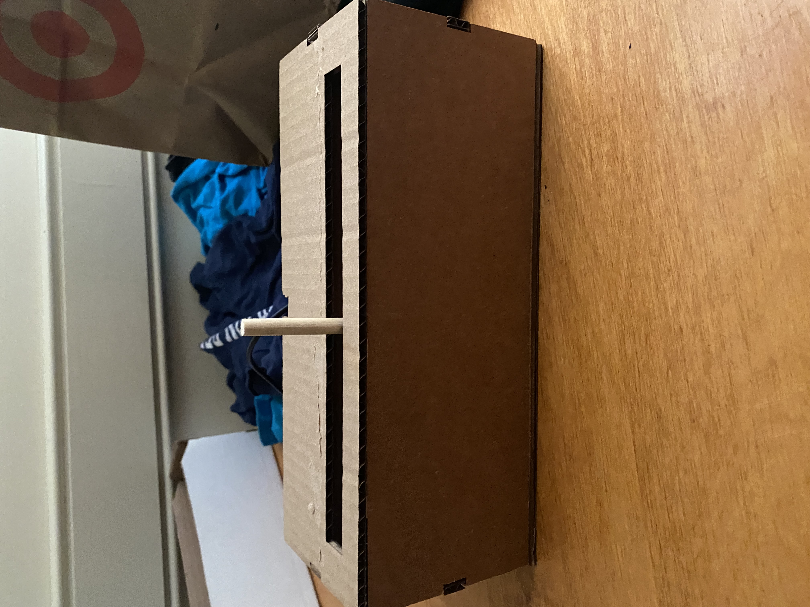
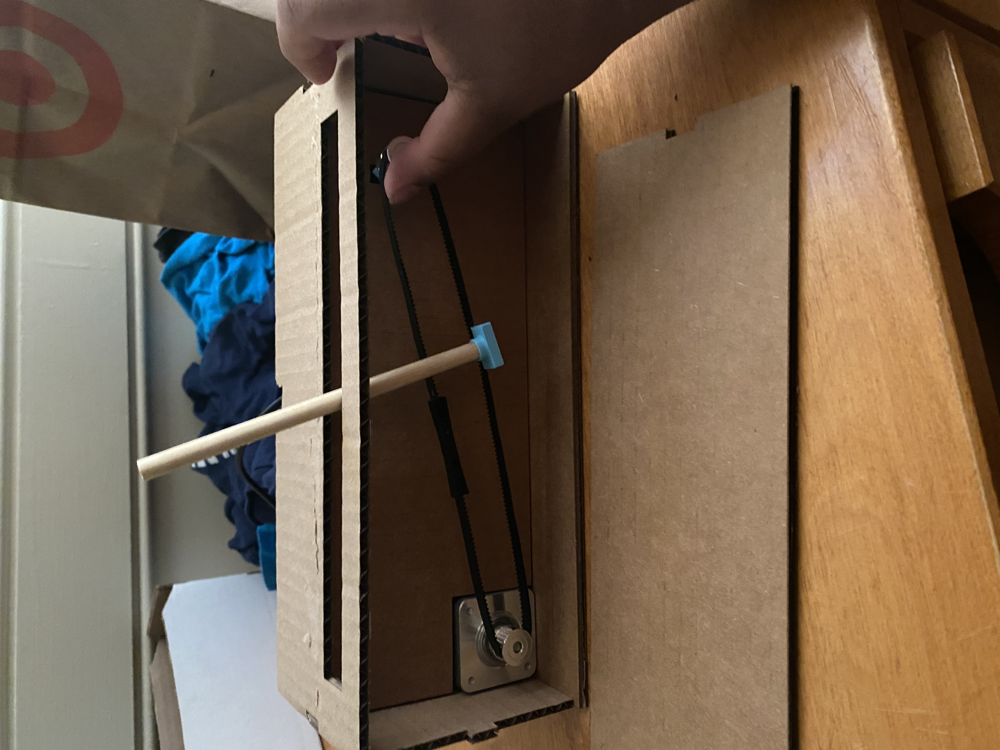
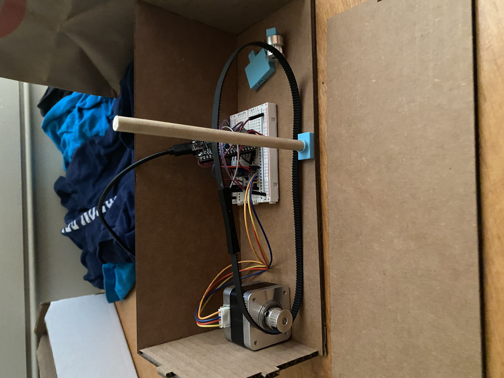

<a onclick="history.back(1)">Go Back</a>
###Final Project
this project is supposed to simulate the look of an airplane taking off using motors and a timing belt.


all of the wires and work areput behind a wall and 2 of the sides of the box can be taken of because of maintananceif needed.

unfortunantyl at the time of writing this my connection needed glue to work conistently and or better so here is a video of my project moving
<video width="400" height="700" controls>
<source src="otherstuff/moves.mp4" type="video/mp4">